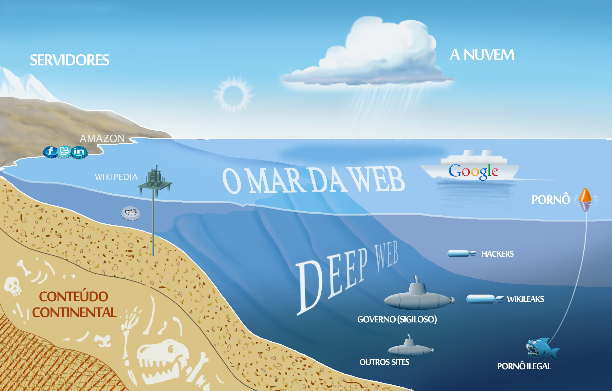

i++
Por:Aryadne Guardieiro e Carla Camargo

Mapa da Internet [Universo UFES]
A Internet pode nos fornecer muitas informações e serviços: notícias, compras, trâmites financeiros, contato social entre outros. Mas estes serviços e informações que nós estamos acostumados a lidar só mostram o que os mecanismos de busca comuns podem alcançar e nos retornar como pesquisas concretas.
Estas páginas que podem ser simplesmente encontradas em uma busca ou simplesmente digitando o endereço nos navegadores comuns (Google Chrome, Mozilla Firefox, Internet Explorer, e etc) são conhecidas como páginas indexadas (ou indexáveis). Para além disso, há ainda um enorme universo de páginas da Web que não conseguem ser indexadas e muito menos acessadas pelo seu navegador de internet rotineiro. A essas páginas é dado o nome de Deep Web.
Esta edição da printf está aqui para te revelar vários detalhes sobre ela!
Vamos lá?
}